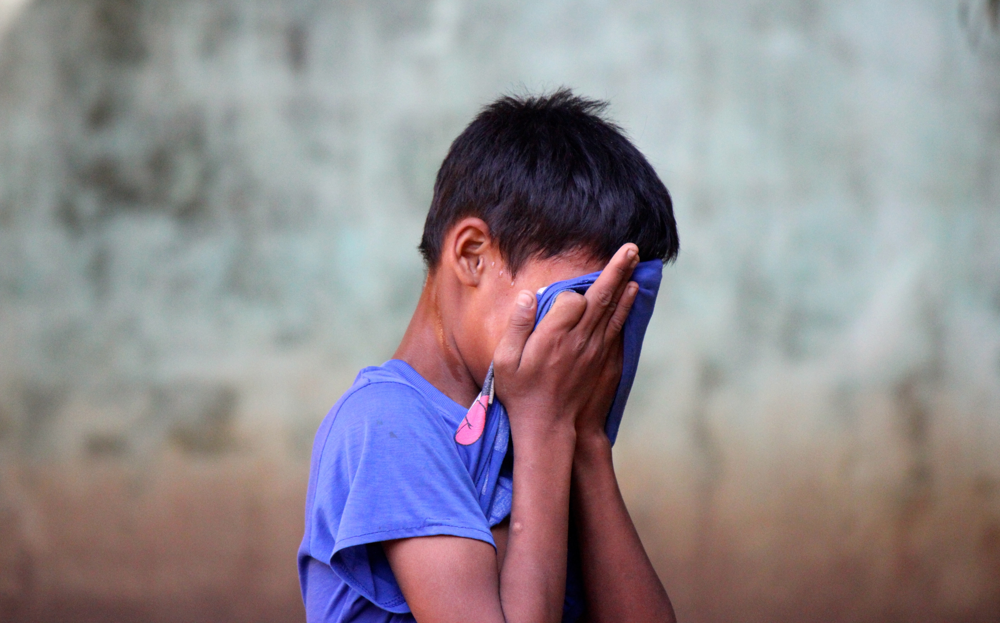

CHILDREN
Mental Health is an essential part of children’s overall health. Mental illnesses are surprisingly common in children and youth. A combination of physical and mental health affect how we think and feel on the inside and and act on the outside.

How to know if a child has mental illness?
It can be hard to tell the difference between normal changes as a child grows, and the symptoms of mental illness. The common symptoms could be showing sudden changes of behavior or feelings, avoiding places, situations or maybe even food which they don’t usually avoid. Some more serious completely unavoidable symptoms could be deliberately hurting themselves and talking of suicide or even the consumption of alcohol or drugs (mainly in teenagers and youth).
Growing Need for Treatment
All children and youth have the right to healthy lives and deserve effective care to treat any mental health problems that they may develop. Mental illnesses, if not treated early, can be disruptive enough to a kid’s normal development that it can affect them for the rest of their lives. However, there is a large amount of unmet need, and health disparities are particularly noticeable for children and youth living in low-income communities, ethnic minority youth or those with special needs.
Who are more vulnerable?
Kids and teens in certain situations can be at higher risks for mental illnesses and may also face additional barriers to getting help. Some of these situations include:
- Young people with a family history of mental illness
- Children or youth who have gone through a major life change such as moving to a new city or new school
- People who have faced or witnessed trauma, including abuse (especially children and teens)
- Gay, lesbian, bisexual or transgender youth
Research work in psychology has contributed to the development of more effective treatment and prevention of mental health issues in children, youth, and families. Psychologists also have programs that are effectively designed to engage families, schools and communities, which are the critical social support system that can guarantee lasting well-being for children especially. They primarily include educating parents on the needs of children at each stage of development, management strategies for teachers in school classrooms and also individual therapy for those with mental health disorders.
HOMELESS
The common types of mental illness among people experiencing homelessness are disorders such as depression, autism, bipolar disorder, schizophrenia, anxiety and other substance abuse disorders.
Connection between Homelessness and Mental Illness
The relationship between homelessness and mental illness is two ways. Homelessness can mean spending nights at a homeless shelter, on a street bench, under a bridge or maybe on a stranger’s couch. A condition like this could lead to major stress about the overall financial situation and eventually lead to some type of mental illness like depression. It can make it immensely difficult to work and earn income, which would prolong the time period of being in a homeless state. The combination of mental illness and homelessness can lead to other factors such as increased consumption of alcohol and drugs and violent behavior.
Homelessness amplifies poor mental health. The stress of experiencing homelessness may aggravate previous mental illness and encourage anxiety, fear, depression, sleeplessness and substance use. The needs of people experiencing homelessness are - physical safety, education, affordable housing, and affordable medical/dental treatment. This stands true whether or not they have a mental illness or not. When providing care to those experiencing homelessness, it is essential to create a safe and supportive atmosphere, address basic needs (e.g. food and shelter), and provide accessible care.
People with mental illness experience homelessness for longer periods of time and have less contact with family and friends. People who have severe mental illnesses over-represent the other homeless people, as they are often released from hospitals and jails without proper community supports in place.
Community-based mental health services play an important role. Homelessness could be drastically reduced if people with severe mental illness were able to get access to supportive housing as well as other necessary support. Comparatively, They encounter more barriers to employment and tend to be in poorer health than other homeless people.
IMMIGRANTS AND REFUGEES
Refugees are defined as “a person who has been forced to leave their country in order to escape war, persecution, or natural disaster.” These survivors of forced displacement from home countries do no receive the mental health care they need. More than 65 million people have been relocated due to wars, political violence, etc.
The number of people displaced from their home countries due to war, armed conflict and other related threats are growing. The responsibility of mental health support for the refugee is shared by organizations like the United Nations High Commissioner for Refugees (UNHCR), World Health Organization (WHO), Governments and Non‐Governmental Organizations. Many refugees are affected by Post-traumatic Stress Disorder (PTSD) due to the situations that they faced during their migration which also affect their quality of life. They also go through depression, somatic impairment, and other associated functional impairments.
Refugees do not choose the country they want to relocate in. Oftentimes, they are forced to move out and in addition to losing needs like food, shelter, education they also end up losing their cultural support and social relationships they are brought up in. Such a trauma can easily impact anyone’s life and lead to mental health issues.
How can their situation get better?
Providing support to assist with housing, employment and other necessities can act as a catalyst for better mental health of refugees. Helping them engage with a family can also develop a sense of connection and reduce isolation. According to statistics, more than 10 million refugees today are under 18 years of age. Provisions of refugee scholarships in universities can immensely help in turning around the lives of the young migrants.